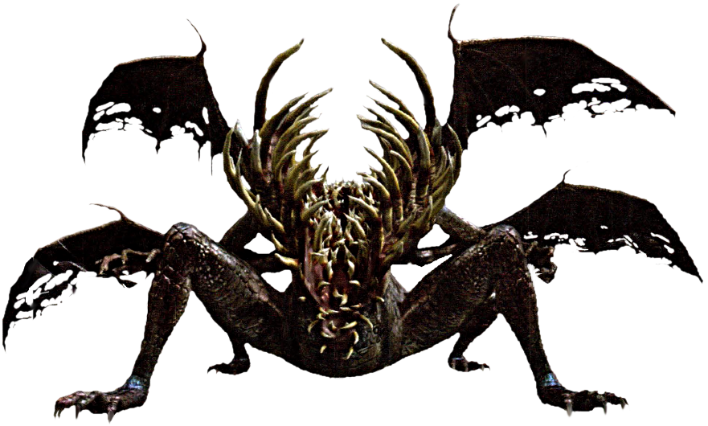

Black Dragon Kalameet is a descendant of the Primordial Archdragons, the original Dragons. He is one of the toughest bosses in the game, with resistances to all elements and a large health pool. Killing him gives you the calamity ring, a ring thats only effect makes you take more damage. Miyazaki loves to troll his players, and this is a perfect example of his sense of humor.

The Gaping Dragon
The gaping dragon is another boss dragon in the game. It was one of the ancient dragons that fought in the war against the bearers of the Lord Souls. As one of the few survivors, it made its' home in a place called Blighttown. Over time he became corrupted by darkness and gluttony, the rib cage turnng into the maw of teeth yopu see now. In the dragons' gluttony, it consumed the key needed to advance into Blighttown.